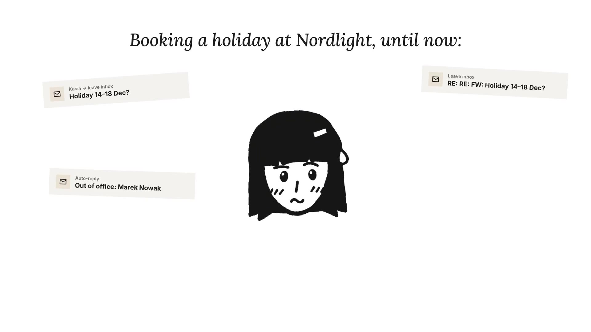

The task
Nordlight (architectural lighting, ~600 FTE across Gdańsk HQ + factory, Warsaw and Oslo) is replacing an e-mail + Excel leave process (Urlop_2026_FINAL_v3.xlsx) and PDF payslips with MyHR, a self-service mobile app for time off, payslips and personal data, with SSO on the existing Nordlight account.
Brief: drive adoption, not awareness. Reach deskless factory staff, enable team leads (the leave approvers) first, and retire the legacy leave inbox on 4 Jan without breaking anyone's holiday.
A company with 600 people still asks for holidays by e-mail, and HR copies everything into a spreadsheet by hand. Now there is an app for that.
But people don't switch just because an app exists. My job was to make them want to try it, show them how, and help the ones who get stuck, including factory workers who never sit at a computer.
